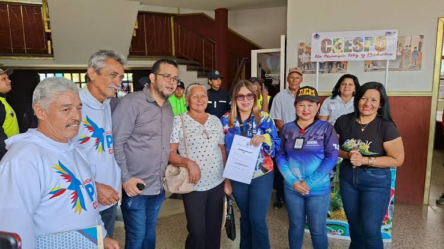

Misión, Visión y Valores Institucionales
Conozca los pilares estratégicos y éticos que rigen la gestión pública de la Alcaldía Bolivariana del Municipio Crespo, orientados al desarrollo integral del territorio y el bienestar social de nuestras comunidades.
¿Por qué trabajamos?
Ejercer una gestión pública municipal eficiente, transparente y participativa, fundamentada en los principios constitucionales y el Plan de la Patria. Nos enfocamos en planificar, ejecutar y supervisar políticas públicas que promuevan el desarrollo endógeno agrícola, el fortalecimiento de la infraestructura urbana y rural de Duaca, El Eneal y todas sus comunidades, garantizando de manera óptima el acceso a los servicios esenciales y realzando nuestra rica identidad histórico-cultural.
Trabajamos de la mano con el Poder Popular organizado para consolidar al Municipio Crespo como un modelo de eficiencia administrativa y corresponsabilidad civil y social.

¿Hacia dónde nos dirigimos?
Ser reconocidos para el año 2030 como un municipio potencia de referencia estatal y nacional, consolidando el lema institucional de "Sacándole el brillo a la Perla". Aspiramos a estructurar un territorial con infraestructuras consolidadas, altos índices de seguridad ciudadana, autonomía eco-productiva sustentable y una red turística cultural de primer orden basada en nuestros atractivos naturales e históricos.
Nos proyectamos como una institución gubernamental de vanguardia tecnológica, con procesos simplificados y un capital humano comprometido con la ética pública y la resolución inmediata de las demandas del pueblo.
Valores que nos Definen
Normas fundamentales que rigen cada decisión y acción ejecutada en nuestro municipio.
Transparencia
Rendición de cuentas claras, acceso público a la información y pulcritud absoluta en el manejo de los recursos públicos municipales.
Compromiso Social
Sensibilidad humana y prioridad absoluta para resolver las problemáticas de las comunidades en situación de vulnerabilidad.
Eficiencia
Optimización rigurosa de los tiempos de respuesta y de los materiales de gestión para alcanzar metas institucionales de alta calidad.
Identidad Local
Respeto, resguardo y orgullo profundo por las tradiciones agrícolas, religiosas, musicales y artesanales de la Perla de Lara.
Objetivos Generales de la Gestión
- Impulsar el encadenamiento productivo local centrado en la exportación y distribución de rubros bandera como el café y la piña.
- Rehabilitar y embellecer de manera permanente los espacios públicos, vialidades secundarias e infraestructuras recreacionales de la entidad.
- Modernizar la recaudación fiscal del municipio a través de plataformas automatizadas que retornen los aportes en obras comunitarias.